wilds of california
An exploration for my Design MFA thesis, seeing how analog games can be used as a method for land conservation awareness.
How might we use different methods of interactive design as an engaging tool for citizen science education and raise awareness to land conservation efforts and policies.
the UC reserve system
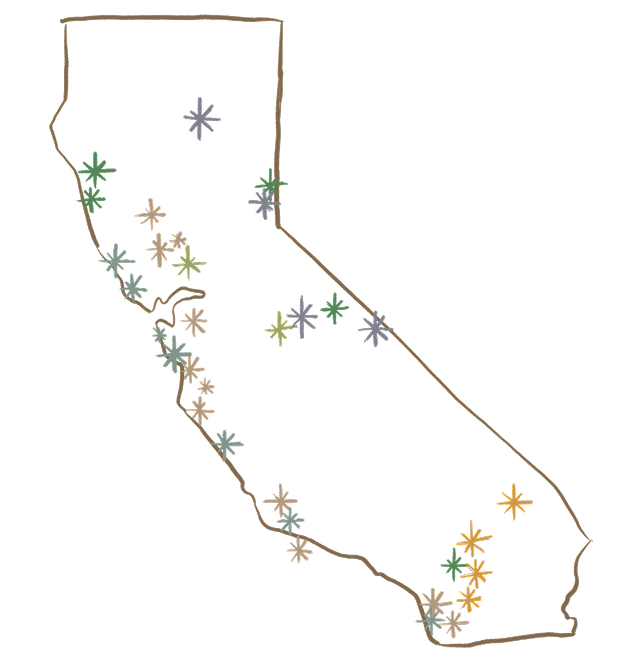
The UCs own 42 unique reserves throughout California. Their primary purpose is to provide outdoor learning spaces for students in the Natural Sciences and dedicated land for Researchers affiliated with the university.
California is home to multiple diverse biomes, being the state with the most biomes in the entire United States.
research
I completed a literature review focusing on how I could use the idea of play with conservation education.
I interviewed 3 Members of the UC Reserve System, 1 UC Student Alum and 1 longtime Davis resident/outdoor enthusiast.
synthesis
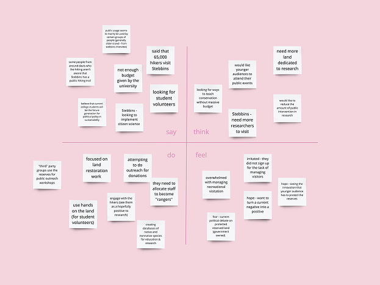
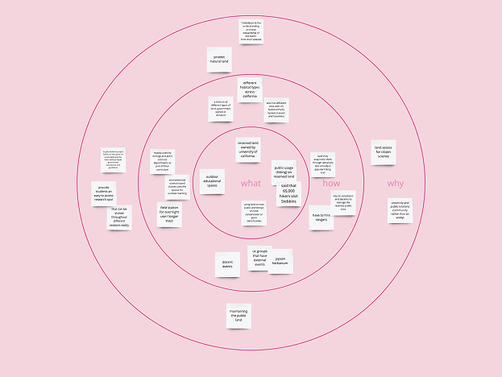
After completing research, I compiled all of the data in 2 synthesis methods. An empathy map & a what/how/why map
ideation
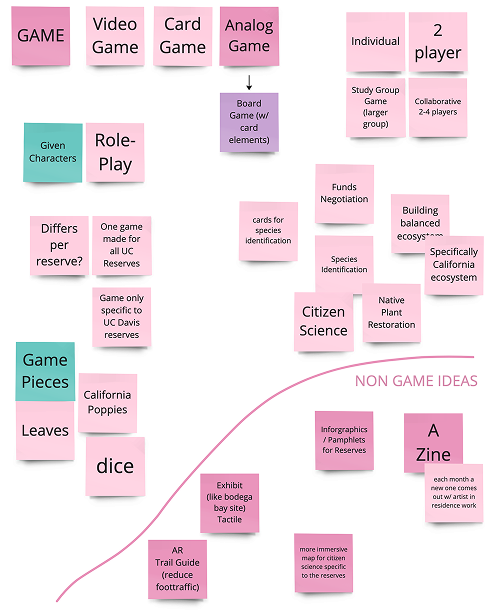
When I decided the focus of my project after synthesis (focusing in on citizen science), I did a quick brainstorming activity and made a mood-board with work I was inspired by. Originally my scope was going to be a board game however you’ll see that I narrowed down to a card game format that can be expanded in the future into a board game.
prototype
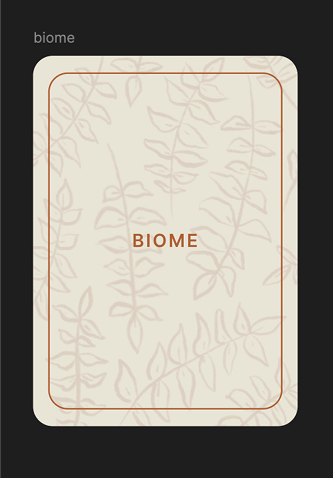
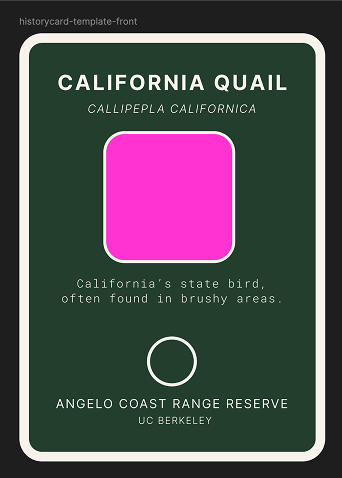
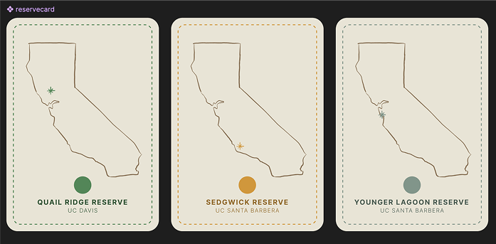
Above are some original prototypes that were scrapped from the game based on feedback. I decided to create a card deck that had cards that featured species and a separate deck that featured individual reserves that are located on a specific biome. Players would draw a reserve card and play as a researcher on that reserve. Players would match species to the reserve card.
testing version 1
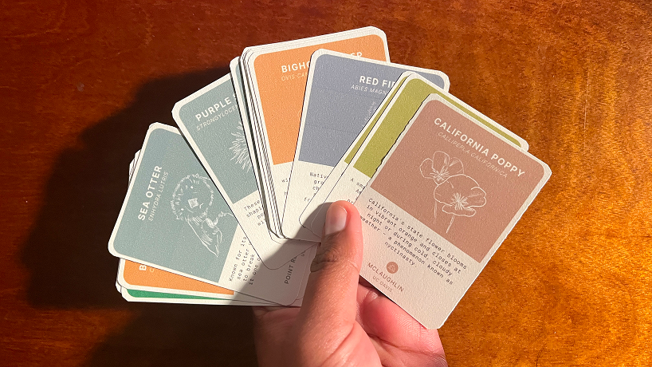
I asked several people to play a miniature prototype of the game to get feedback and see what holes were in the current gameplay.
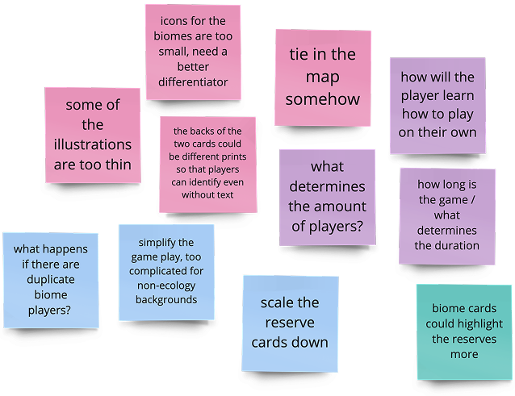
Above is some of the main feedback ^
final project for winter 2025 thesis
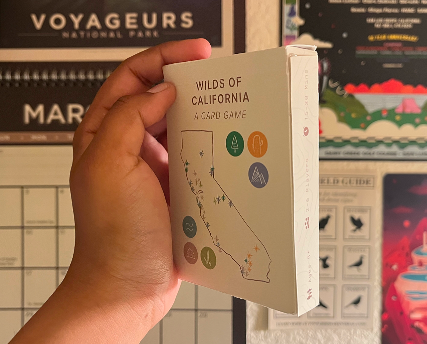
components
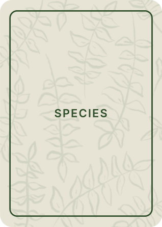
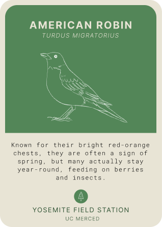
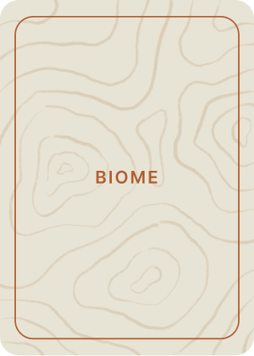
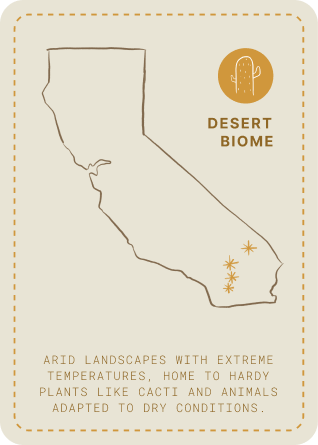
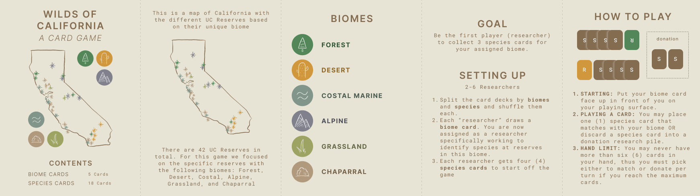
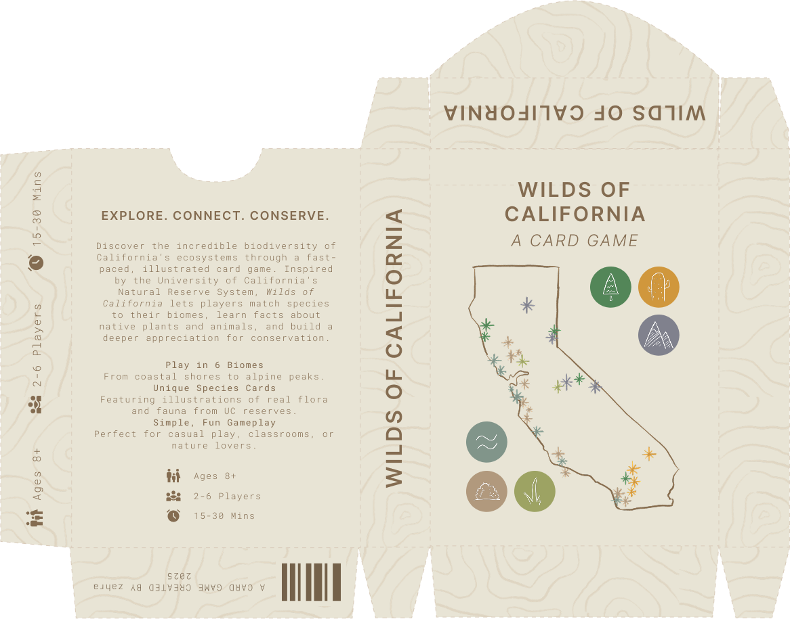
biome cards
6 unique cards. 1 for each player.
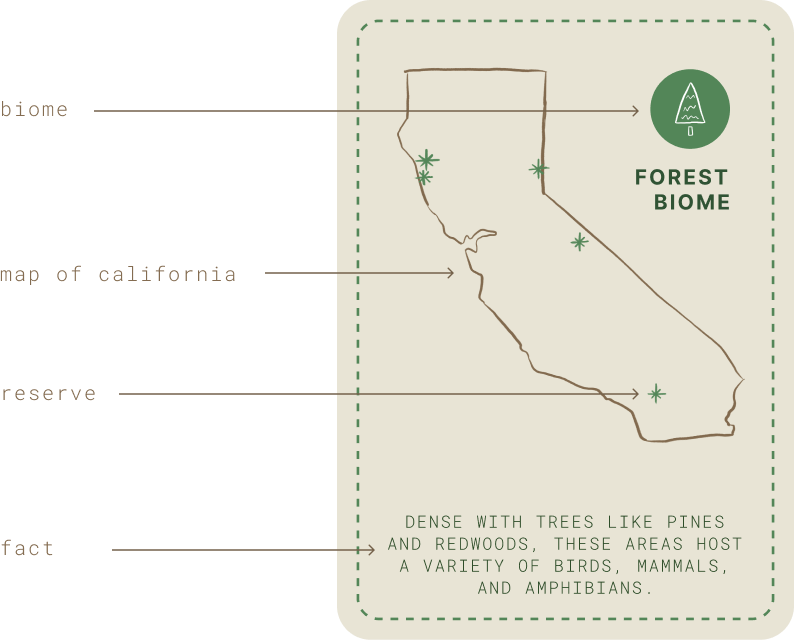
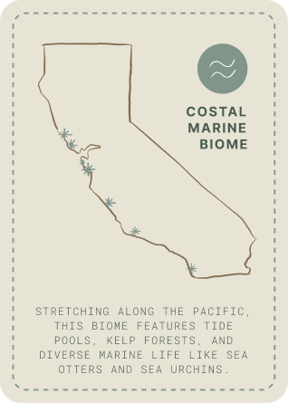
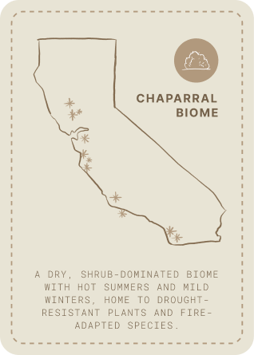
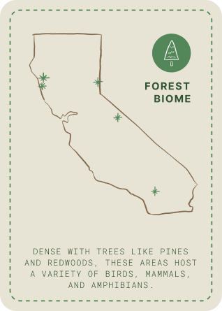

species cards
18 unique cards. 3 per California biome.
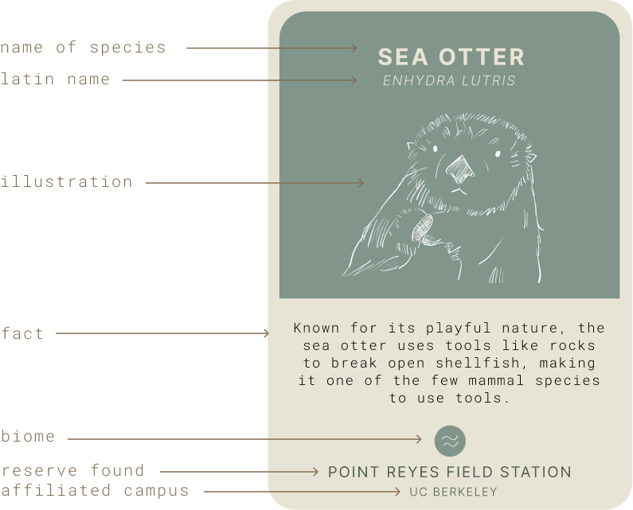
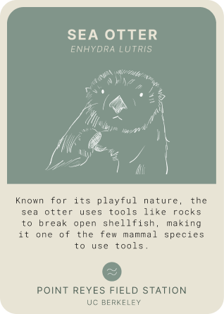
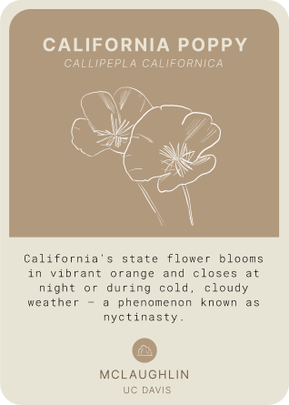
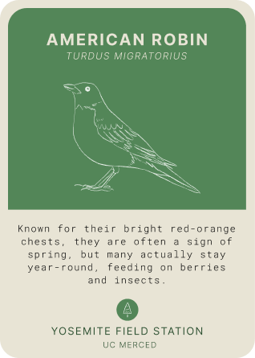
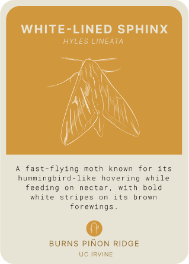
instructions
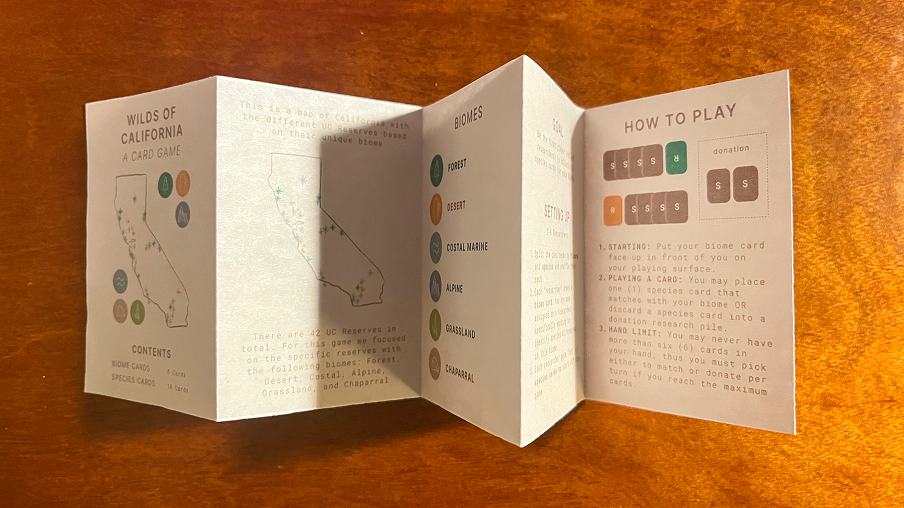
Goal: be the first player (researcher) to collect 3 species cards for your assigned biome.
- Split the card decks by biomes and species and shuffle them each.
- Each "researcher" draws a biome card — you are now assigned as a researcher specifically working to identify species at reserves in this biome.
- Each researcher gets four (4) species cards to start off the game.
gameplay
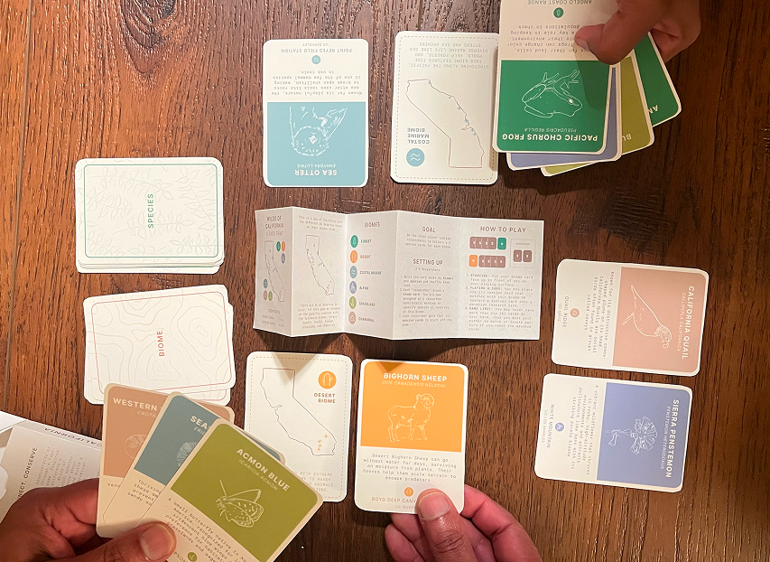
- Starting: put your biome card face up in front of you on your playing surface.
- Playing a card: you may place one (1) species card that matches your biome OR discard a species card into a donation research pile.
- Hand limit: you may never have more than six (6) cards in your hand — you must pick either to match or donate per turn if you reach the maximum.